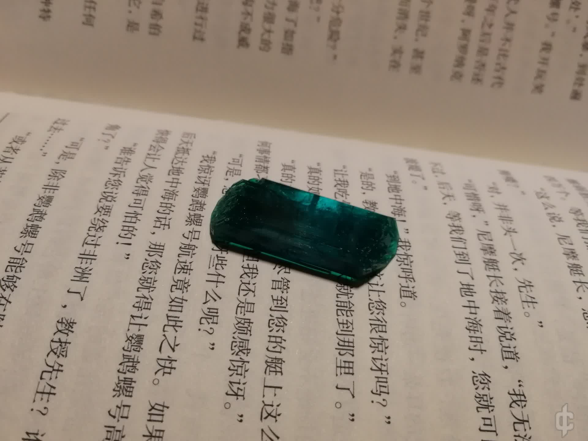
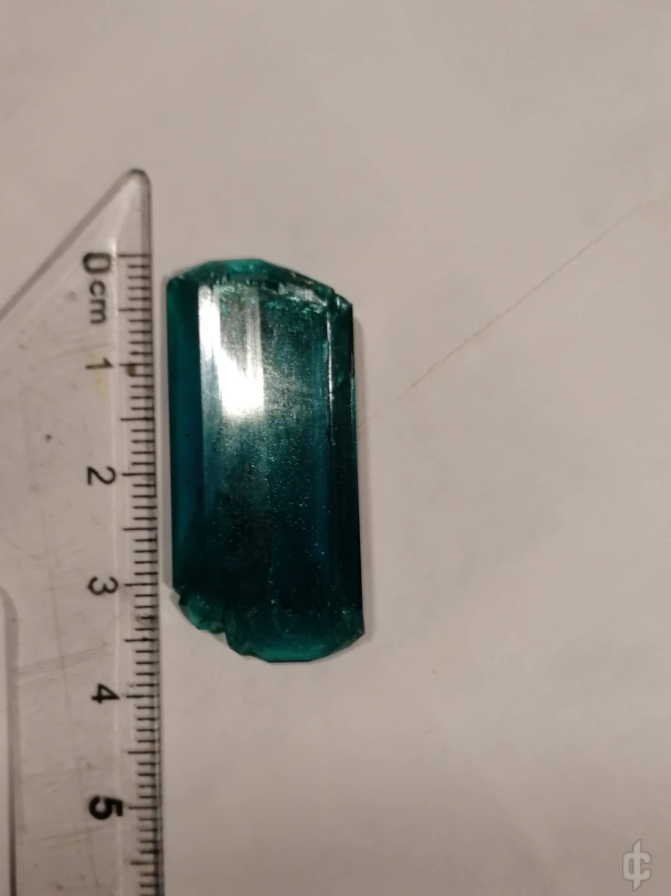
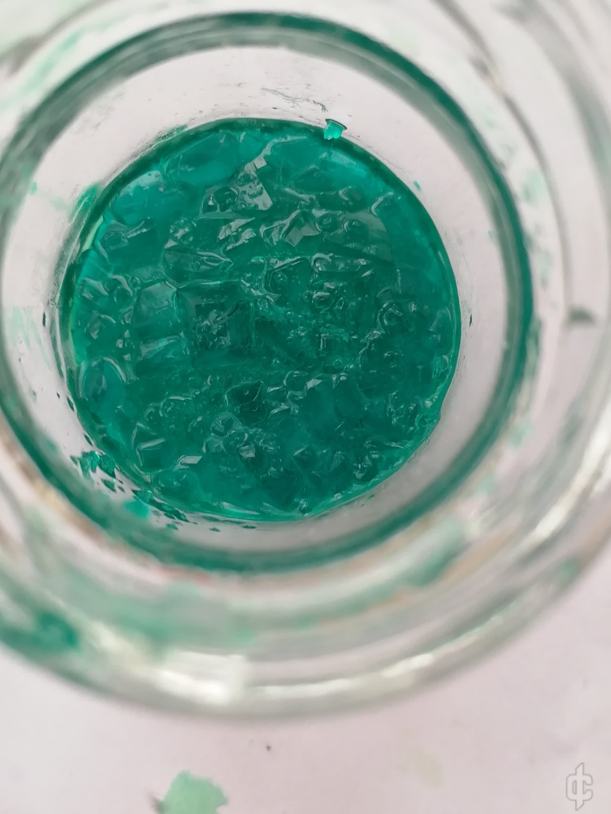
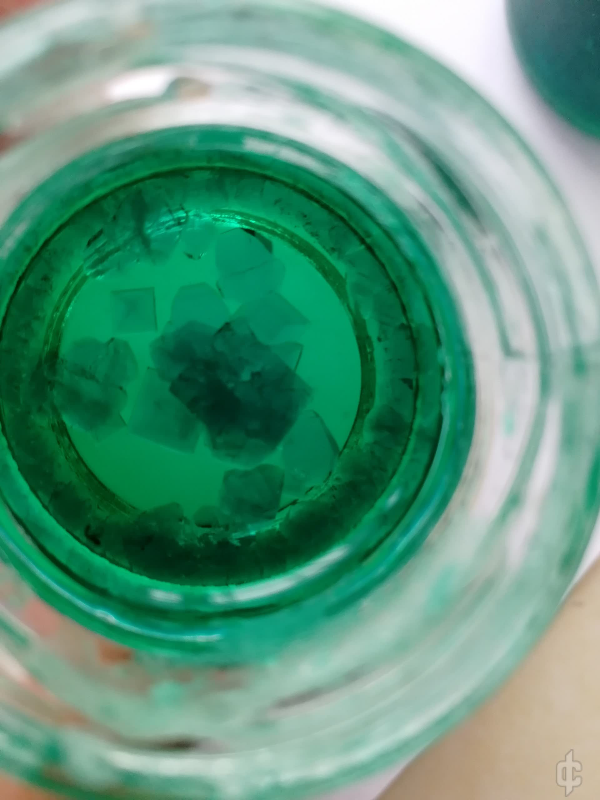

先上图：


养硫酸镍是真的不容易
方法
大致和某位大佬做的硫酸镍键盘帽差不多
就是饱和溶液自然蒸发，让晶核慢慢长大
只不过晶核是自己养的
1 制作晶核
先是配好大约50℃的硫酸镍饱和溶液，这里可能有几点要注意
首先，网上查的硫酸镍溶解度似乎不是很准确…（至少我查到的不准）比实际的溶解度要低一些。解决方法事配置饱和溶液时，保证底部能有一定未溶解的硫酸镍
其次，个人感觉硫酸镍比较容易大饼，所以如果用热饱和溶液做晶核的话，温度过高可能容易导致大饼…50℃个人觉得比较合适（不过大饼也有可能是我使用二次回收的硫酸镍溶液所致）
配好饱和溶液后就放到培养皿，或者什么瓶瓶罐罐里，等待析出晶核（大概要6-12h）
这时要避免震动，不然…大饼…

制作晶核时的其中一次失败

勉强成功的晶核（里面只有两个晶核勉强能用）
晶核最好还是不要用失败的回收液来结，容易变成晶簇
2 养出合适的晶核后，把晶核用镊子夹出，放到干净的培养皿里，然后往培养皿里加事先配好的常温下硫酸镍饱和溶液。这里溶液的配置方法和做晶核那里差不多，留一些硫酸镍在底部，保证晶核之后不会溶掉。
3 等待几天，晶核就会慢慢长大。在这期间，同样要避免震动，这次的硫酸镍晶体放了大概6天，生长速度还是可以的
作为晶核时，大约 1cm 长
方法大致就是这样。
做这个晶体做了一个月，试了好多次才成功…可能是我太菜了吧…也希望这些能对各位大佬有些帮助吧
萌新第一次写文章，可能有许多不足之处，或者用语的不准确，大佬们多多包涵…
本文原发于科创论坛，2021 年： 《[晶体展示]硫酸镍晶体的养成》